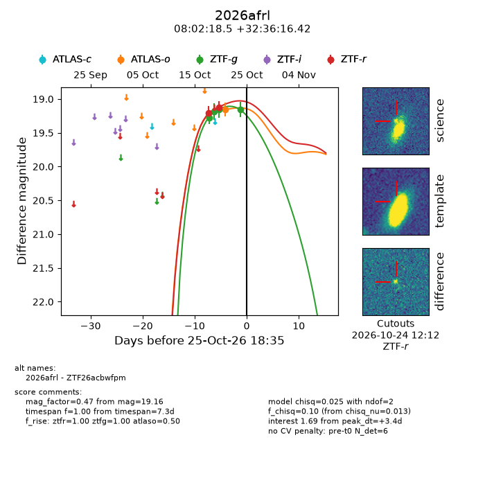
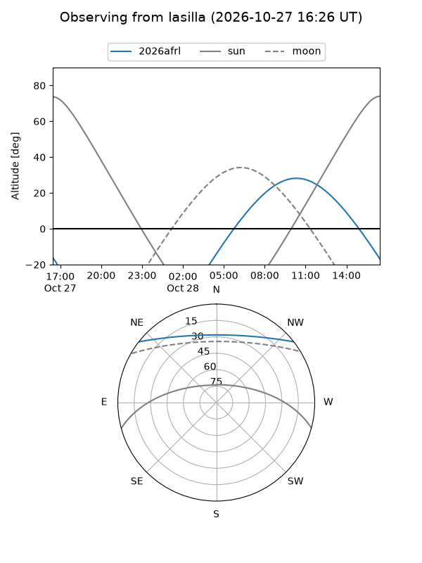
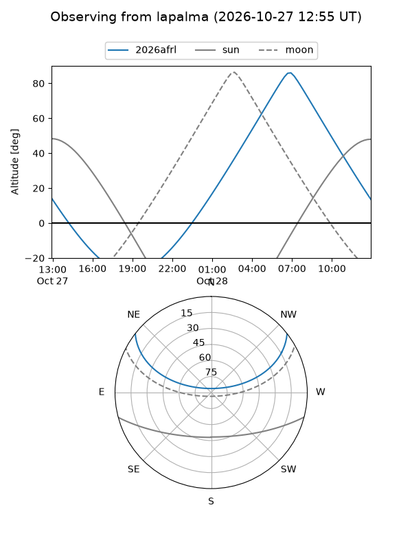
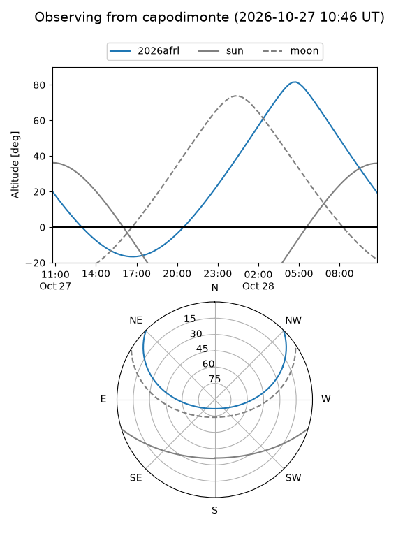
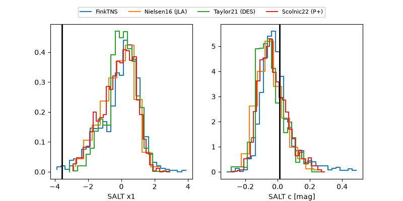

2026afrl
Target 2026afrl at 2026-10-25 18:36
Aliases and brokers:
FINK-ZTF: ztf.fink-portal.org/ZTF26acbwfpm
Lasair-ZTF: lasair-ztf.lsst.ac.uk/objects/ZTF26acbwfpm
ALeRCE-ZTF: alerce.online/object/ZTF26acbwfpm
YSE-PZ: ziggy.ucolick.org/yse/transient_detail/2026afrl
TNS name: wis-tns.org/object/2026afrl
Direct TNS query: direct search
alt names
ZTF26acbwfpm (ztf,fink_ztf)
2026afrl (tns,yse)
Coordinates:
equatorial (ra, dec) = 120.5769,+32.60456
equatorial (HMS+DMS) = 08:02:18.46,+32:36:16.42
galactic (l, b) = (188.6118,+28.28533)
Flags:
peak dt: +3.4
Photometry:
last atlaso=19.16, ztfg=19.16, ztfr=19.12
1 atlaso, 4 ztfg, 2 ztfr detections
Lightcurve

Visibility



Additional plots
